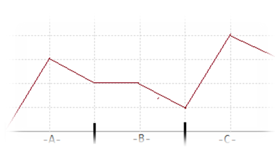

BZPRO
#2119. 股市的预测
内存限制：259 MiB
时间限制：10 Sec
提交
提交记录
讨论
题目描述
墨墨的妈妈热爱炒股，她要求墨墨为她编写一个软件，预测某只股票未来的走势。股票折线图是研究股票的必备工
具，它通过一张时间与股票的价位的函数图像清晰地展示了股票的走势情况。经过长时间的观测，墨墨发现很多股
票都有如下的规律：之前的走势很可能在短时间内重现！如图可以看到这只股票A部分的股价和C部分的股价的走势
如出一辙。通过这个观测，墨墨认为他可能找到了一个预测股票未来走势的方法。进一步的研究可是难住了墨墨，
他本想试图统计B部分的长度与发生这种情况的概率关系，不过由于数据量过于庞大，依赖人脑的力量难以完成，
于是墨墨找到了善于编程的你，请你帮他找一找给定重现的间隔（B部分的长度），有多少个时间段满足首尾部分
的走势完全相同呢？当然，首尾部分的长度不能为零。

输入格式
第一行包含两个整数N、M，分别表示需要统计的总时间以及重现的间隔（B部分的长度）。
接下来N行，每行一个整数，代表每一个时间点的股价。
4≤N≤50000 1≤M≤10 M≤N 所有出现的整数均不超过32位含符号整数。
输出格式
输出一个整数，表示满足条件的时间段的个数
样例
样例输入
12 4
1 2 3 4 8 9 1 2 3 4 8 9
样例输出
6
【样例说明】
6个时间段分别是：3-9、2-10、2-8、1-9、3-11、4-12。
数据范围与提示